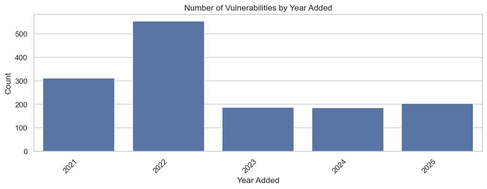
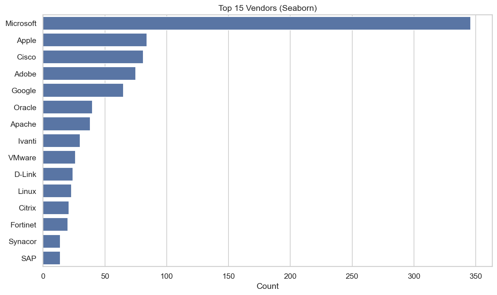
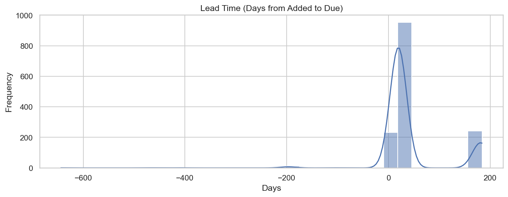
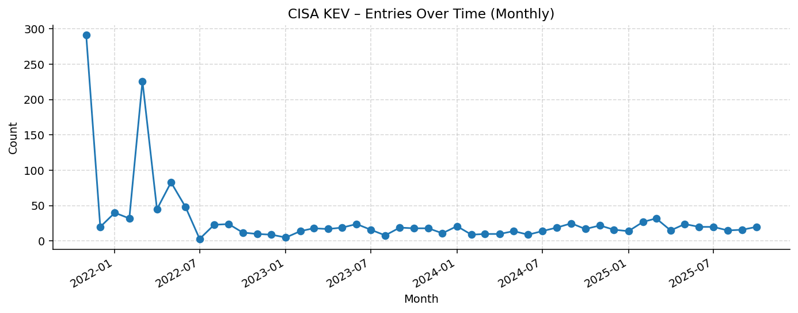
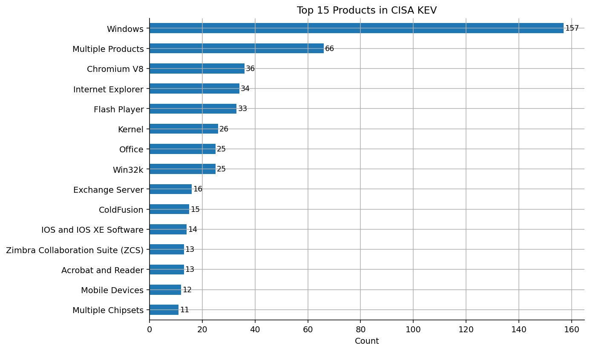
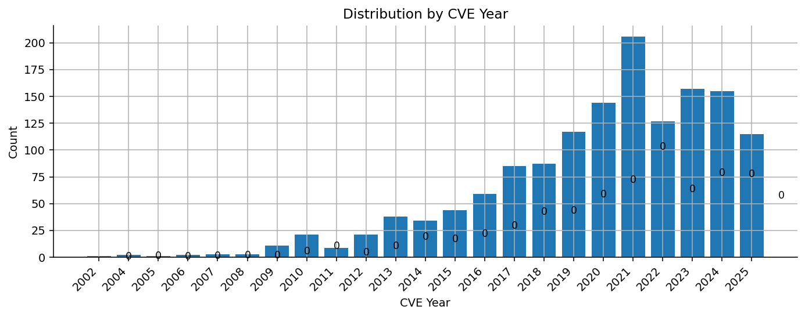
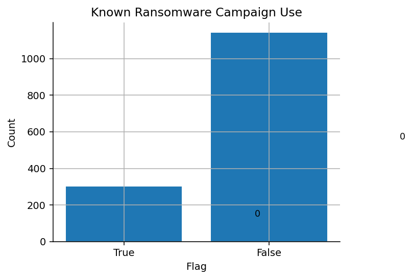

CISA KEV – Exploratory Data Analysis







Interpretation & Security Context
- Temporal Trend: Dataset spans 2002–2025 with peak reporting in 2021.
This suggests concentration of disclosure activity and possible coordination around patch cycles.
- Vendor Exposure:Microsoft tops the list with 346 entries,
reflecting the outsized impact of widely deployed platforms on enterprise risk posture.
- Remediation Timing: Median lead-time (add→due) ≈ 21 days,
indicating typical remediation windows of ~1–2 months; adjust SLAs for critical CVEs accordingly.
- Operational Note: Validate negative/very short lead-times; they often arise from retroactive
updates or pre-assigned CVEs, which can skew SLA analytics if not handled explicitly.